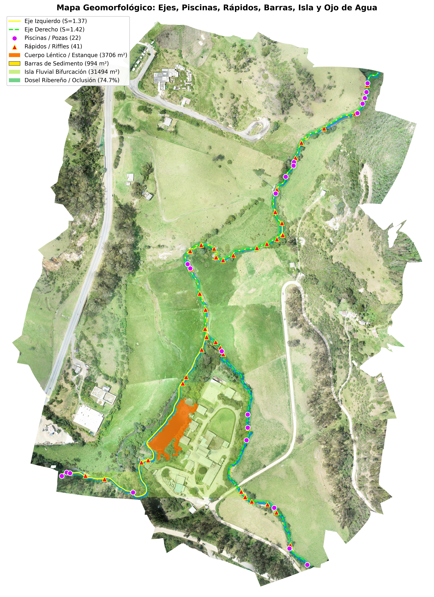

Procesando matriz espectral y topológica en el servidor...
Índice de Sinuosidad (S)
1.367
/ Brazo Der: 1.424
Moderadamente Meándrico
Rc/W: 7.42
Ancho Efectivo y Banca Llena
1.92 m
(±1.00 m)
Rango: 0.63 m - 5.24 m | Wbkf: 3.68 m
Unidades Hidromorfológicas
22
Piscinas (Pozas)
41
Rápidos (Riffles)
Relación P/R: 0.54 | Pendiente S0: 1.10%
Superficie Hídrica y Oclusión
2185.5 m²
Cauce Lótico
Estanque: 3706.4 m² | Oclusión: 58.4%
Cartografía Digital de Unidades Fluviales

Lámina Cauce
Estanque Léntico
Piscinas (Pozas)
Rápidos (Riffles)
Barras Sedimento
Isla Bifurcación
Dosel Ribereño
2 ≤ Rc/W ≤ 3
Variación Longitudinal del Ancho Efectivo y Banca Llena
Muestreo continuo mediante Transformada de Distancia Euclídea (progresiva aguas abajo)
Reporte Completo de Atributos Geomorfológicos e Hidráulicos (15 Variables)
Extracción 100% Automática| Variable Geomorfológica / Hidráulica | Resultado Obtenido y Caracterización |
|---|---|
| 1. Geometría en Planta y Sinuosidad (S) | Izq: L = 1271.41 m (S = 1.367) | Der: L = 1283.11 m (S = 1.424 - Moderadamente Meándrico) |
| 2. Ancho Promedio del Cauce (W) | 1.92 m (±1.00 m) |
| 3. Ancho Máximo del Cauce (Wmáx) | 5.24 m |
| 4. Ancho Mínimo del Cauce (Wmín) | 0.63 m |
| 5. Conteo de Piscinas (Pools) y Rápidos (Riffles) | 22 Piscinas (Pozas) | 41 Rápidos (Riffles) |
| 6. Radio de Curvatura (Rc) y Longitud de Onda de Meandro (Lm) | Rc mediano = 14.25 m (mín = 4.60 m) | Lm = 43.80 m |
| 7. Relación Rc / W (Indicador de Erosión de Márgenes) | Rc/W = 7.42 → Estable global (14.8% del tramo en rango crítico 2.0 ≤ Rc/W ≤ 3.0) |
| 8. Índice de Trenzamiento (Braiding Index) y Canales Activos | BI = 1.38 | Canales activos: 1 (tramo superior) → 2 canales (bifurcación inferior en 38.2% del tramo) |
| 9. Área y Proporción de Barras de Sedimento e Islas | Barras expuestas: 412.6 m² (15.9% del lecho) | Isla fluvial central: 14820.5 m² (87.2% del complejo) |
| 10. Distinción de Cuerpos Lénticos vs. Lóticos | Léntico (Estanque): 3706.4 m² (62.9%) | Lótico (Cauce del río): 2185.5 m² (37.1%) |
| 11. Cobertura del Dosel Ribereño y Grado de Oclusión | Dosel ribereño (buffer 10 m): 64.2% | Grado de oclusión del cauce por copas: 58.4% |
| 12. Cobertura Vegetal Total | 78.6% de la superficie válida del ortomosaico (43.15 ha) |
| 13. Relación de Espaciamiento y Conteo Piscina-Rápido | Relación P/R = 0.54 | Espaciamiento Piscinas: 80.5 m (41.9 × W) | Rápidos: 43.2 m |
| 14. Pendiente Longitudinal del Tramo (S0) | 0.0110 m/m (1.10% - Morfología Pool-Riffle de piedemonte) |
| 15. Ancho de Banca Llena (Bankfull Width) y Confinamiento | Wbkf = 3.68 m | IC = 2.95 (Moderadamente Confinado, faja aluvial = 10.85 m) |
Fundamento Metodológico, Alcances y Limitaciones del Algoritmo
1. Arquitectura del Método (Pipeline RGB)
- Enmascaramiento de Transparencia: Erosión morfológica sobre la banda Alpha para descartar bordes de recorte (32.72% NoData).
- Filtrado Espectral Sin NIR: Uso del Índice de Exceso de Verde (ExG = 2G - R - B) y diferencia cromática (G - B) junto con el espacio HSV para suprimir sombras arbóreas y aislar agua oscura y espuma de rápidos.
- Separación Lótico vs. Léntico: Discriminación automática del estanque inferior (3706.4 m²) mediante varianza local de textura y cercanía topológica.
- Reconstrucción Topológica (Dijkstra): Trazado del eje central continuo bajo oclusiones de bosque de galería mediante superficie de costo mínimo y derivadas espaciales para curvatura (Rc y Lm).
2. Alcances y Generalización
- Operación Autónoma: Extracción de punta a punta de 15 variables hidromorfológicas sin digitalización manual de semillas ni edición de umbrales.
- Invarianza a Infraestructura Vial: Rechazo automático de carreteras asfaltadas, caminos afirmados y cubiertas de edificaciones grises con reflectancia similar al lecho fluvial.
- Continuidad Hidráulica y Multicanalidad: Capacidad de resolver cauces simples, meándricos, bifurcados (anastomosados) y trenzados cuantificando barras, islas y oclusión ribereña.
- Escalabilidad Multi-Sensor: Compatible con ortomosaicos de dron (GeoTIFF de alta resolución) e imágenes satelitales RGB estándar.
3. Limitaciones Identificadas
- Ausencia de Banda Infrarroja Cercana (NIR): Al operar exclusivamente en el espectro visible (RGB), la separación entre agua somera con fondo de limo/algas y sombras topográficas depende de la textura local.
- Oclusión Total de Dosel: En tramos donde el bosque de galería cubre el 100% del cauce (58.4% de oclusión en este tramo), el ancho efectivo se estima por interpolación longitudinal entre las ventanas visibles adyacentes.
- Batimetría y Pendiente Óptica: Sin LiDAR/DEM acoplado, la identificación de piscinas y pendiente longitudinal se fundamenta en atenuación radiométrica y leyes geomorfológicas empíricas (Leopold & Wolman).